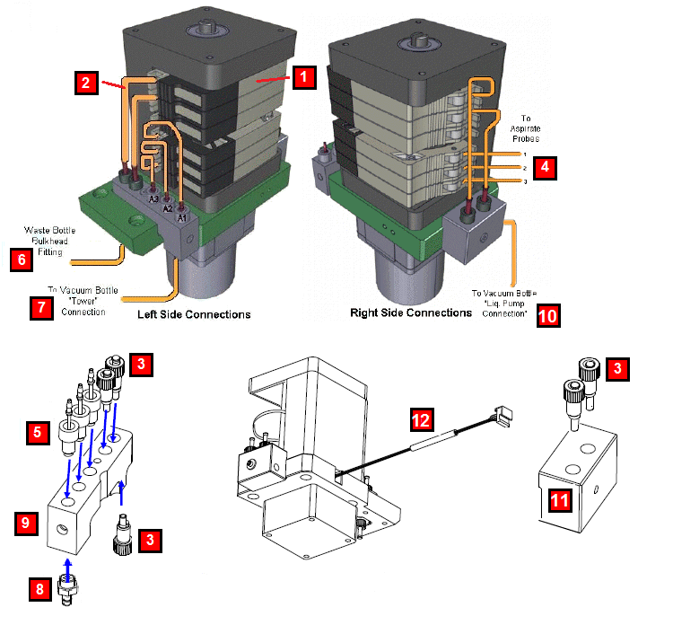

Peristaltic Pump
Illustrated Parts List
- Fittings
- Manifolds
- Tubing
- Probes
| Description | Order Number | Notes |
|---|---|---|
| Pump, Peristaltic, Assy, Complete, Boxed & Tested RoHS | B94949 |
Replaces A80247. Pump motor and tubing roller assembly are not serviceable, replace the pump if tubing roller assembly is defective or damaged. |

| Item | Description | Order Number | Notes |
|---|---|---|---|
| 1 | Tube Carrier, Peripump | A82244 |
Tube Cassette, Peripump Quantity = 1. Order a quantity of 6 to replace all cassettes. |
| Not Labeled | ASSEMBLY, MOTOR, PERIPUMP | C57192 | Drive motor that attaches to the underside of the Access peristaltic pump. Replaces B48020. |
| Not Labeled | Kit, Cassette, 6 Channel Pump | B00350 | Contains 6 cassettes, 2 large peri-tubing, and 3 small peri-tubing. |
| 2 | TUBE, PERI PUMP, 2.79MM | 77512 |
Tubing, Cream, Vacuum Bottle to Peristaltic Pump, Large ID (Contacts Rollers) (MSQ=2) Large peri-tubing (Waste out tube) from Vacuum Bottle to Peri Pump to Waste Bottle. Quantity = 1. Order a quantity of 2 to replace all tubing. |
| 3 | ASSY, FITTINGS, PERI PUMP | 81141 |
Fitting Set, Large (Peri Pump Right or Left Manifold) (Steel Tube, Nut & Yellow Ferrule) (2 of Each Part) Quantity=2. Order quantity of 3 to replace the left and right manifold fittings. |
| Not Labeled | FST, FERRULE NUT, 1/8 | 7211A | Fitting, Vacuum Bottle Cap (for 1/8" OD Tubing) |
| Not Labeled | FST, FERRULE, 1/8 | 7210A | Ferrule, Tubing, Plastic, Yellow, 1/8" ID (Vacuum Bottle Cap & Peri Pump) |
| 4 | TUBE, PUMP 1.29 MMID | 77372 |
Tubing, Cream, Aspirate Probe to Peristalitic Pump (Contacts Rollers) (MSQ=3) Small peri-tubing. Quantity = 1. Order a quantity of 3 to replace all tubing. |
| 5 | ASSY, FITTINGS, MANIFOLD, FS | 81062 |
Fitting Set, Small (Peri Pump Left Manifold) (Steel Tube, Nut & Blue Ferrule) (1 of Each Part) Quantity=1. Order a quantity of 3 to replace all. |
| Not Labeled | FITTING, FLANGELESS, SHORT | 79162 | Fitting, Ferrule Compression, Black, Peri Pump Manifold (Compresses Ferrules to Steel Tubes in Peri Manifold & Asp/Disp Tube Assemblies |
| Not Labeled | TUBE, FITTING, MANIFOLD | 79094 |
Tube, Steel, Small ID, Peripump Left Manifold, Top Front 3 Connections Replaced by C69775 at stockout. |
| TUBE, FITTING, MANIFOLD | C69775 |
Tube, Steel, Small ID, Peripump Left Manifold, Top Front 3 Connections Replaces 79094 at stockout. Cut in serial number: 574311 and above. |
|
| Not Labeled | FST, FERRULE, 1/16" TUBING | 6062A | Ferrule, Tubing, Plastic, Blue, 1/16" OD (for Peri Pump, Sub. Probe, & Asp/Disp Tube Assy) |
| 6 | FST, TUB-TPR, 1/8 ID, I/16 WALL | 6875A |
Tubing, Cream, 1/8"ID x 1/4"OD, Fluidics Module and Fluids Trays Peristalic Pump underside to internal bulkhead fitting waste fluid out is 16" long. Order the tubing by foot. |
| 7 | TUBING,.125 IDX.187 OD | A53635 |
Tubing, Clear, 1/8" x 3/16", Order in Multiples of 1 Foot Quantities. Used for:
|
| 8 | FST, FTG, 3/32 BARBED, 1/4-28 THRD |
C97122 |
Fitting, Barb, 3/32" x 1/4"-28 Thread Replaces 5459A . Bottom Front fitting on Peri Pump Left Manifold and also the bottom fitting on the wash tower for the tubing that goes to the vacuum jar. |
| 9 | MANIFOLD, PERIST., 7 PORT | 79802 | Manifold, Pump, Peri, 7 Port, Left Side |
| 10 | TUBE ASSY, SF 34.5" | 7972A |
Tubing, Clear, 34.5", Peri Pump Right Manifold, (Backside of Manifold to Vacuum Bottle) (Liq.Pump) Tubing is pre-measured to 34.5" - quantity of 1 is 34.5" This is the small tube with black fittings on the ends and is not the one that is usually |
| 11 | MANIFOLD, PERIST. 3 PORT | 79812 | Manifold, Pump, Peri, 3 Port, Right Side |
| 12 | ASSY, OPT SENSOR, 8-INCH, W-TYPE RoHS | 7879B | Sensor, Home for Wash, Substrate, and Precision Pump, Peristaltic Pump, 8" Long RoHS |
| Not Shown | SERVICE KIT, ASPIRATE PROBE | 81600081 | Kit, Probe, Aspirate, Stainless Steel |
| Not Shown | ASSY, ASPIRATE PROBE | 8409B |
This part includes only 1 aspirate probe. Order quantity of 3 to replace all probes. Replaced by C69777 at stockout. |
| ASSY, ASPIRATE PROBE | C69777 |
This part includes only 1 aspirate probe. Order quantity of 3 to replace all probes. Replaces 8409B at stockout. Cut in serial number: 574311 and above. |
|
| Not Shown | ASSY, GROUND STRAP RoHS | 7987A | Cable, Ground, Peristaltic Pump to Backplane RoHS |
| Not Shown | FITTING, 1/8 TEE | A15342 | T-fitting between vacuum jar, wash tower tubing, and peripump. |
Edit Log
- 07/20/2016 THX - New format release.
- 8/4/2017 AJP - Added peri-pump motor PN.
- 11/27/2019 THX - Removed obsolete parts.
- 7/26/2021 THX - Removed 7984A fitting.
- 4/17/2023 THX - Added C69775 fitting tube and C69777 aspirate probe.
- 4/4/2024 DJP - Replaced 5459A with C97122.
- 2/20/2025 DJP - Added C57192, removed B48020.
- 8/28/2025 DJP - Use "Order Number" heading.